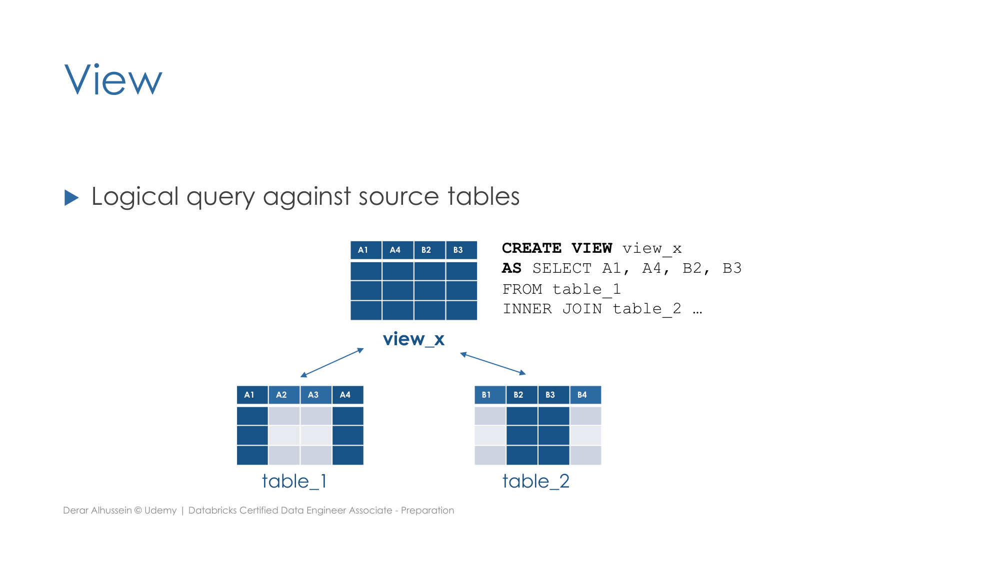

Section 1 · Databricks Intelligence Plattform · Quelle: Udemy-Kursmaterial „Views“, ergänzt mit Databricks-Dokumentation
Neben Tabellen und Volumes kennt Databricks ein drittes relationales Objekt: die View. Eine View ist eine virtuelle Tabelle ohne eigene physische Daten – sie ist im Kern nichts anderes als eine gespeicherte SQL-Abfrage gegen bestehende Tabellen, die bei jeder Nutzung der View erneut ausgeführt wird.
Eine View kombiniert und filtert Spalten aus einer oder mehreren zugrunde liegenden Tabellen zu einem neuen, logischen Ergebnis:
CREATE VIEW view_x AS SELECT A1, A4, B2, B3 FROM table_1 INNER JOIN table_2 ...;

Nach der Erstellung lässt sich eine View genauso abfragen wie eine gewöhnliche Tabelle – per SELECT. Da bei jeder Abfrage die hinterlegte Query erneut gegen die aktuellen Daten der Basistabellen ausgeführt wird, spiegelt eine View immer den aktuellen Stand wider, ohne dass eigene Daten synchronisiert werden müssten.
Databricks unterscheidet drei Arten von Views, die sich in ihrer Lebensdauer und Sichtbarkeit unterscheiden:
| (Stored) View | Temporary View | Global Temporary View | |
|---|---|---|---|
| Sichtbarkeit | Über beliebig viele Sessions hinweg | Nur innerhalb der aktuellen Spark-Session | Über alle Sessions hinweg, solange derselbe Cluster läuft |
| Persistenz | In der Datenbank gespeichert | Nicht gespeichert | Nicht gespeichert |
| Entfernt durch | Nur explizit per DROP VIEW | Automatisch beim Ende der Session | Automatisch beim Neustart des Clusters |
| Syntax | CREATE VIEW | CREATE TEMP VIEW | CREATE GLOBAL TEMP VIEW |
Wie Tabellen werden Stored Views dauerhaft in der Datenbank abgelegt – gespeichert wird dabei allerdings nur die Definition (die SQL-Abfrage), nicht die Daten selbst:
CREATE VIEW view_name AS query; DROP VIEW view_name;
Eine Temporary View ist an die aktuelle Spark-Session gebunden und existiert nur so lange, wie diese Session läuft:
CREATE TEMP VIEW view_name AS query;
Für die Prüfung relevant ist die Frage, wann in Databricks überhaupt eine neue Spark-Session entsteht – denn genau dann verschwinden alle bis dahin angelegten Temporary Views:
Eine Global Temporary View verhält sich ähnlich wie eine Temporary View, ist aber nicht an eine einzelne Session, sondern an den gesamten Cluster gebunden: Solange der Cluster läuft, kann jedes daran angehängte Notebook – unabhängig von seiner eigenen Session – auf sie zugreifen. Global Temporary Views werden dafür automatisch in einer eigenen, clusterweiten Datenbank namens global_temp abgelegt:
CREATE GLOBAL TEMP VIEW view_name AS query; -- Zugriff erfordert den Datenbank-Qualifizierer "global_temp" SELECT * FROM global_temp.view_name;
current_user() oder is_account_group_member() abhängt – ein älterer Ansatz für zeilen-/spaltenbasierte Zugriffskontrolle, der inzwischen weitgehend durch die in Section 7 behandelten Row Filters und Column Masks abgelöst wurde, syntaktisch aber weiterhin unterstützt wird.